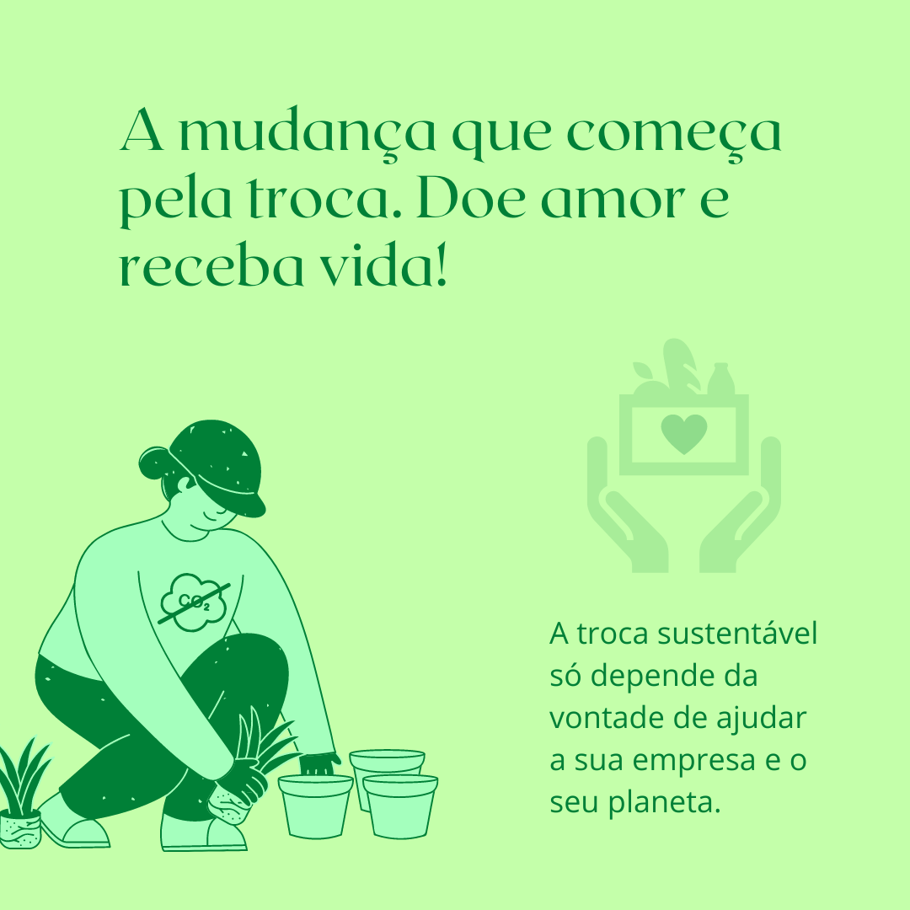

Conheça mais sobre o projeto Troca Sustentável
Somos uma empresa sem fins lucrativos e incentivamos a indústria autossustentável. Por meio de parcerias com empresas geradoras de CO² promovemos o projeto zero carbono, onde se tem por objetivo auxiliar empresas a tornarem-se verdes e atingirem a meta de zero emissão de gases prejudiciais ao meio ambiente.
Acreditamos em um ciclo de troca, realiza-se uma pesquisa para saber quantas toneladas de CO² a empresa emite ao ano, e então calculamos quantas áreas seriam necessárias para o reflorestamento para reduzir a emissão de gases gerados pela indústria em questão. A troca ocorre por meio do auxílio da empresa colaboradora a manter nossos objetivos com todos os lucros obtidos usados para a capacitação e contratação de famílias carentes, as quais ajudam no cultivo e plantio de nossas mudas. Desse modo, é gerando uma renda e uma reinserção social dessas famílias, e todo o excedente de lucros é utilizado na compra de alimentos e insumos para intituições de caridade, enviados com doações arrecadadas por nós.
É importante destacar que uma empresa com baixa emissão de CO² ou até mesmo zero, tem o benefício de usar essa conquista como um impulsionador de marketing. Atraindo novos usuários adeptos a sustentabilidade e a ecologia, e trazendo também o benefício de pagamentos de menos impostos, visto que governos tendem a cobrar menos de empresas autossustentáveis. Ademais, é possível prevenir-se de possíveis multas governamentais relacionadas a poluição. Portanto, nossas metas são repletas de benefícios que refletem no seu bem-estar e qualidade de vida.